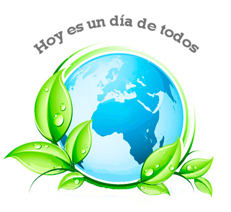

Dia Internacional de la madre Tierra 22 de abril


- 

Realizado por:
Lizbeth Sanchez De La Rosa
4to Semestre Grupo "E"
Especialidad:
Programacion
Submodulo
Desarrolla Aplicaciones Moviles
Docente:
Lic.Jose Antonio Gomez Hernandez
4to Semestre Grupo "E"
Programacion
Desarrolla Aplicaciones Moviles
Lic.Jose Antonio Gomez Hernandez
Celebramos el dia mundial de la Madre Tierra para recordar que el planeta y sus ecosistemas nos dan la vida y el sustento. Con este dia, asumimos, ademas, la responsabilidad colectiva, como nos recordara la declaracion de Rio de 1992, de fomentar esta armonia con la naturaleza y la Madre Tierra. Este dia nos brinda tambienla oportunidad de concienciar a todos los hgabitantes del planeta acerca de los problemas que afectan a la Tierra y a las diferentes formas de vida que en se desarrollan.
la Asamblea General de la Organización Internacional de las Naciones Unidas designó al 22 de abril como Día Internacional de la Madre Tierra.No obstante, el primer Día de la Tierra se celebró el mismo 22 de abril pero de 1970 en Estados Unidos tras la inciativa del entonces senador Gaylord Nelson. El primer efecto inmediato de esta celebración acabó en la creación de la Environmental Protection Agency (Agencia de Protección Ambiental). La elección de la fecha tiene que ver con la actividad escolar en los Estados Unidos, ya que no coincide con los períodos ordinarios de pruebas y exámenes, tanto a nivel de educación primaria y secundaria como universitaria. En 2009 la Asamblea General de la ONU decidió rebautizar este día como el Día Internacional de la Madre Tierra, por considerar que «Madre Tierra» era un término más amplio y más utilizado en diferentes países del mundo.
"Madre Tierra" es una expresión común utilizada para referirse al planeta Tierra en diversos países y regiones, lo que demuestra la interdependencia existente entre los seres humanos, las demás especies vivas y el planeta que todos habitamos. La Tierra y sus ecosistemas son nuestro hogar. Para alcanzar un justo equilibrio entre las necesidades económicas, sociales y ambientales de las generaciones presentes y futuras, es necesario promover la armonía con la naturaleza y el planeta.
El 23 de abril de 2018 se realizó en la sede de las Naciones Unidas en Nueva York, el 8° Diálogo Interactivo sobre Armonía con la Naturaleza, en ocasión de la conmemoración del Día Internacional de la Madre Tierra. El evento fue convenido por el Presidente de la Asamblea General, Miroslav Lajcak, quien destacó la importancia del Diálogo para intercambiar ideas sobre desarrollo y patrones de producción y consumo sostenibles en armonía con la naturaleza. Durante la jornada, se discutió sobre cómo los marcos legales y económicos de la Jurisprudencia de la Tierra impactan la implementación de patrones de producción y consumo sostenibles en Armonía con la Naturaleza. El Diálogo se realizó con el objetivo de inspirar a los ciudadanos y las sociedades a reconsiderar la relación que mantienen con la naturaleza, acorde a la meta 12.8 de los Objetivos de Desarrollo Sostenible con respecto a los patrones de consumo y producción sostenibles.
La Asamblea General designa en su resolución el 22 de abril como el Día Internacional de la Madre Tierra, teniendo en cuenta que en muchos países se celebra el día de la Tierra, y con el objetivo de alcanzar un justo equilibrio entre las necesidades económicas, las sociales y las ambientales de las generaciones presentes y futuras, y para promover la armonía con la naturaleza y la Tierra. La Conferencia de las Naciones Unidas sobre el Medio Humano de 1972 celebrada en Estocolmo sentó las bases de la toma de conciencia mundial sobre la relación de interdependencia entre los seres humanos, otros seres vivos y nuestro planeta. Asimismo, se estableció el 5 de junio como el Día Mundial del Medio Ambiente y se creó el Programa de las Naciones Unidas para el Medio Ambiente, la agencia de la ONU encargada de establecer la agenda ambiental a nivel global, promover la implementación coherente de la dimensión ambiental del desarrollo sostenible en el sistema de las Naciones Unidas y actuar como un defensor autorizado del medio ambiente.